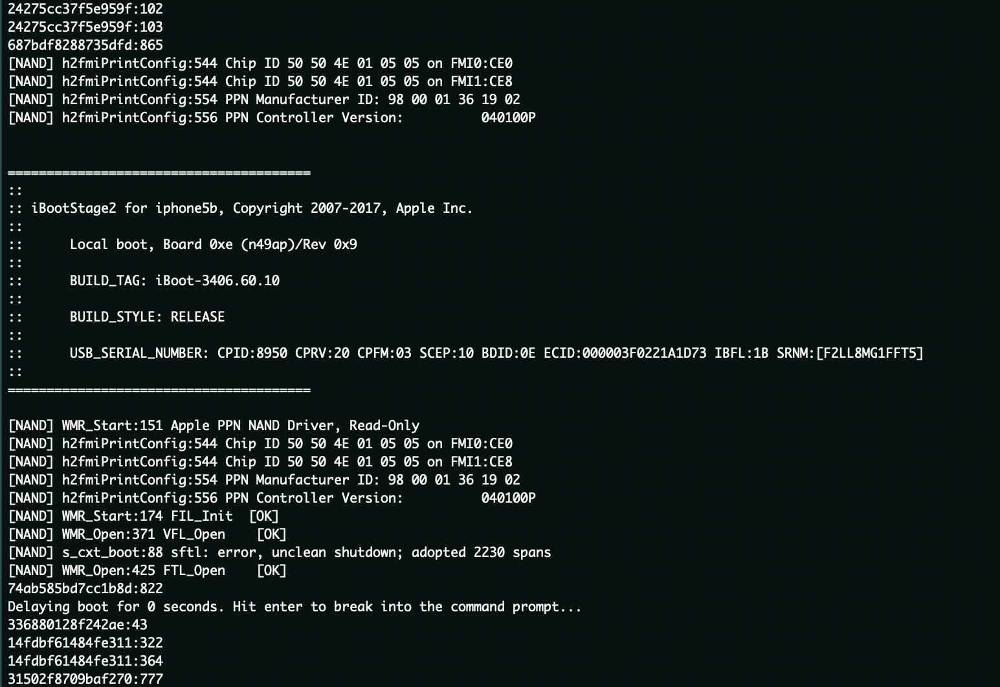
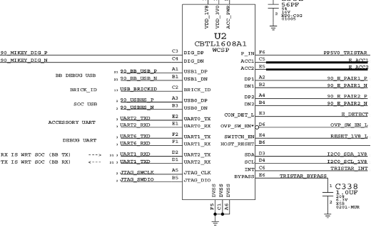
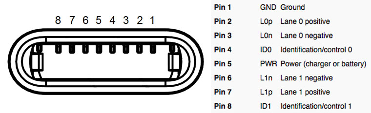
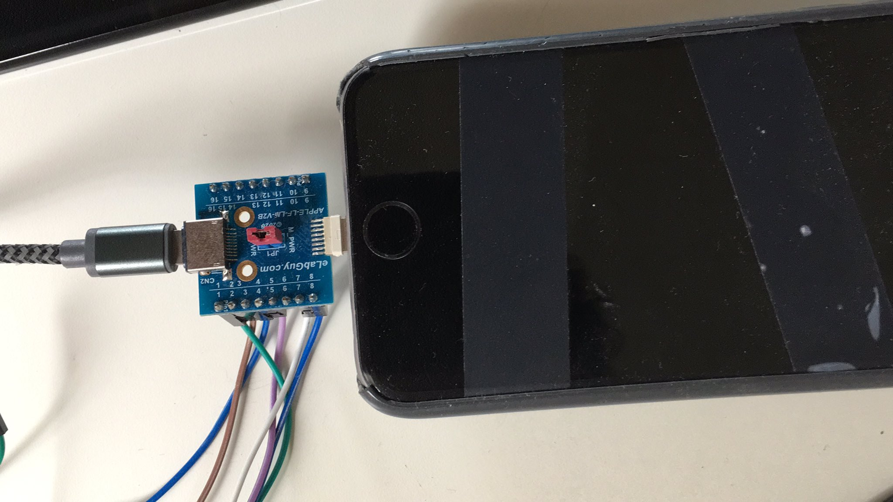
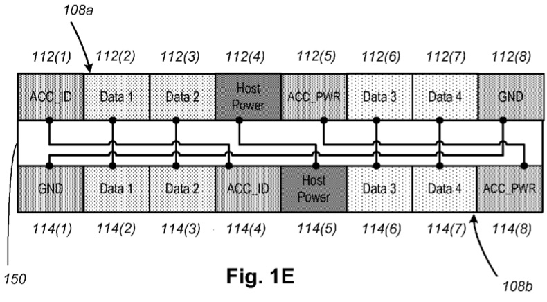
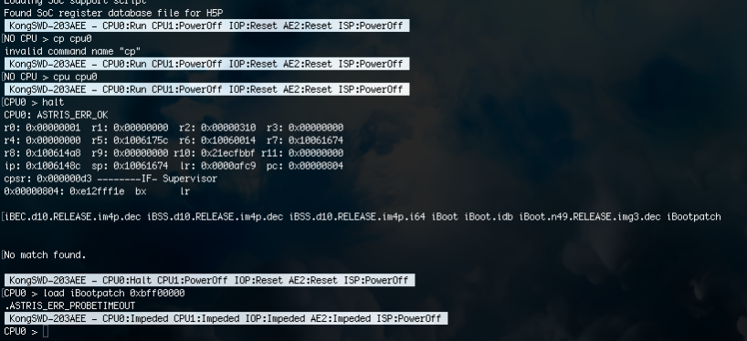

By at0m741
iBoot est le second composant de la chaine de démarrage des appareils iOS d’Apple, il est le plus gros et gère bon nombre de fonctions dont le chargement du kernel. Il est vérifié et lancé par le Low_Level_Bootloader lui-même vérifié et lancé par la SecureROM (tout pars de ce composant précis mais je vais y revenir).

Les avantages de la compromission d’iBoot, c’est qu’il est le composant qui a le plus d’I/O via son interface de commande USB, il gère une interface UART (voir photo ci-dessus), ce qui est intéressant sachant qu’il est le dernier composant à avoir un accès au coprocesseur AES qui permet de chiffrer et déchiffrer les composants du système de démarrage.
Autre point qui est sans aucun doute le plus important à noter ; si l’un des composants de la chaine de démarrage est compromis, la suite des composants bas niveau, comme USERLAND sont compromis.
Il existe différentes méthodes de recherche de vulnérabilités sur iBoot dont la plus accessible est le reverse, mais n’en déplaise aux puristes, la suivante reste néanmoins la plus performante bien que la plus couteuse : debug via Serial Wire Debugger.
En effet tous les appareils iOS depuis l’iPhone 5 et son port lightning possèdent le Tristar une puce qui gère les différentes interfaces du port Lightning dont le SWD ainsi que le UART.

Un premier problème se pose : comment l’activer ?
Tout se passe au niveau de la secureROM et deux options s’ouvrent à nous :
Néanmoins le gros du travail passe par le port lightning intégré en 2015 par Apple sur l'iPhone 5

En effet sur les appareils Apple iOS, le SWD n’est accessible que via le port lightning, mais il ne suffit pas d’un simple programme pour y accéder, il faut un câble spécial ou la grosse différence se situe dans le chip du lightning (un 1-Wire propriétaire), qui fonctionne par un échange d’identifiants (SDQ) entre le Tristar (ou Hydra pour les plus récents) et le HiFive (connecteur lightning mâle qui contient le Chip SDQ SN2025/BQ2025).

En sniffant les wire du Lightning (du moins sur la puce HiFive) grâce à un analyseur logique (Cheap + Saleae pour ma part) on peut arriver à comprendre comment les câbles communiquent via les différents messages échangés.
Par exemple pour un cable classique le message commence par la requête 0x74 qui demande au lightning d'activer le courant et voir comment les différents pins sont adressés la suite est 0x00 0x02, ces deux addresses correspondent au données (data) et 0xFF qui est le CRC8(cyclic redundancy check) sur le type de demande et sur l'ensemble des données.
Pour ce qui est de la détection des différents accessoires les pins importants sont les ACC_iD (pin 1 sur la première face et pin 4 sur la seconde face):

Il est possible d'obtenir les iD grâce à ACCCTL un outil lignes de commandes interne à apple qui s'exécute directement sur l'iDevice.
En fonction des différents câbles on peut exéctuter et récupérer les ID:
DCSD (uart): 20 00 00 00 00 00
Kong (SWD): 20 02 00 00 00 00 / A0 00 00 00 00 00 (en fonction de ASTRIS cf. plus bas)
En ayant accès à mon propre câble kong j'ai pu récupérer les réponses du Tristar grâce à l'interface USB/UART de celui-ci ce qui pourrait, en theorie, me permettre de cloner le câble en implémentant moi même le SDQ (quelques tricks et carte de developpement sont nécessaires tout de même)
Pour résumer le SWD n'est possible que lorsque le CPFM (Chip Fuse Mode) est à 00 ou 01 et uniquement grâce à un câble spécial avec l'iD correspondant (et les options de SWD en plus mais je n'en dirais pas plus dans cet article j'y reviendrais dans un prochain)
Dans notre cas il s’agira d’un appareil demoted. L’exploit Checkm8 s’applique à la partie DFU (Device Firmware Update) de la ROM qui est le protocole de lancement d’images via USB en mode DFU.
Lorsque l’interface USB démarre pour obtenir une image, elle va enregistrer une interface permettant de gérer toutes les commandes et allouer un buffer pour les I/O. Si vous envoyez des données, le paquet d’installation est traité par le code principal qui appelle ensuite le code de l’interface USB.
Le code d’interface vérifie que wLength est plus court que la longueur du buffer de sortie en entrée et, le cas échéant, il met à jour un pointeur passé en argument avec un pointeur sur le tampon de sortie
Il retourne ensuite la variable wLength qui est la longueur qu’il veut recevoir dans le buffer
Le code du driver USB met ensuite à jour une variable globale avec la longueur et se prépare à recevoir les paquets de données.
Si un paquet de données est reçu, il est écrit dans le io_buffer via le pointeur qui a été passé sous forme d’argument et une autre variable globale est utilisée pour suivre le nombre d’octets déjà reçus.
Quand toutes les données ont été reçues, le code spécifique au mode DFU est appelé à nouveau, puis le contenu du io_buffer est copié dans l’emplacement mémoire où l’image est ensuite démarrée.
Ensuite le code USB réinitialise toutes les variables et continue à gérer les nouveaux paquets.
Si l’iPhone sort du mode DFU, le io_buffer est libéré et en cas d’échec de l’analyse de l’image, la BootROM entre à nouveau en DFU.
Les appareils RELEASE sont fused avec un CPFM (Chip Fused Mode) de 03 (c'est-à-dire 00000011b), indiquant sécurité et production. Les appareils de développement ont un CPFM égal à 01 (secure, dev) ou 00 (insecure, dev). Le Fuse est effectuée de manière matérielle. Par conséquent, une fois le périphérique fabriqué, il ne peut plus être modifié. La SecureROM est chargée de charger les valeurs de fusible au démarrage et d’appliquer la sécurité. L'exécution de code dans la SecureROM permet la demotion, ce qui permet de remplacer les bits CPFM de la valeur. Les valeurs sont chargées dans un registre mappé en mémoire, dont la valeur peut être modifiée. Remplacer le CPFM consiste donc simplement à écrire dans cette adresse mappée en mémoire. Notez que la demotion ne modifie pas réellement l'état du CPFM, et n'est donc que temporaire, et persiste jusqu'au prochain redémarrage
Le debugging est permis une fois l’exploit exécuté et la démotion activée, nous pouvons donc utiliser le logiciel ASTRIS (dont je ne citerai pas la provenance)

ASTRIS permet d’obtenir une interface de debug du SoC via différents câbles Lightning (vus précédemment) qui permettent l’accès au port SWD (Kong, Kanzi, Chimp etc…).
L’image ci-dessus montre l’exécution du Framework ASTRIS en utilisant un câble Kong sur un iPhone 5c où j'ai arrêté l’exécution du SoC et envois d’une image d’iBoot patchée pour annuler les vérifications de signatures. Afin de lancer l’iBoot il faut faire en sorte qu’il démarre de la même manière que si il était exécuté par l’appareil. Une fois chargé en mémoire il suffit de modifier l’adresse du PC (Program Counter) à laquelle démarre le code de l’iBoot soit la fonction _iBootStart.
xxxxxxxxxxROM:5FF00BA4 _ibootStart ; CODE XREF: ROM:5FF000FC�p`ROM:5FF00BA4 ; DATA XREF: ROM:5FF000F4�o ...`ROM:5FF00BA4 PUSH {R7,LR}ROM:5FF00BA6 MOV R7, SPROM:5FF00BA8 LDR R0, =aIbootStart ; "\niBoot start\n"ROM:5FF00BAA BL loc_5FF233C4ROM:5FF00BAE MOVS R0, #0ROM:5FF00BB0 BL loc_5FF16E54ROM:5FF00BB4 BL loc_5FF1570CROM:5FF00BB8 BL loc_5FF143A8ROM:5FF00BBC BL unk_5FF15264ROM:5FF00BC0 LDR R0, =aMain ; "main"
Une fois iBoot exécuté le demote reste actif, le debugging reste donc possible.
Le debugging bas niveau via SWD sur les appareils iOS était jusqu’à présent une tâche bien complexe et nécessitait des coûts assez important, mais avec l’arrivée de l’exploit checkm8 et la possibilité de demote des appareils, les perspectives de recherche de vulnérabilités bas niveau se sont considérablement ouvertes et laissent donc d’énormes possibilités et ne nécessitent plus de passer d’innombrables heures à désassembler (enfin si toujours mais différement) et à chercher de nouveaux tricks afin de compromettre la sécurité de nos bijoux hors de prix.
Pour ma part le projet en ce moment porte sur le Lightning, j'essaye de recréer un câble UART (et par la suite SWD mais pas assez de skill pour le moment), j'ai passé la phase de recherche et de compréhension, let me hack now
Bibliographie :
https://www.theiphonewiki.com/wiki/IBoot_(Bootloader)
http://newosxbook.com/bonus/iBoot.pdf
http://ramtin-amin.fr/#tristar
https://nyansatan.github.io/lightning/
Beaucoup de recherches personnelles et internes que je ne peux pas partager ici.
thanks to @nyan_satan and @manchenkoos for lightning research, @iH8sn0w, @axi0mX, @qwertyoruipz @matteyeux @key2fr